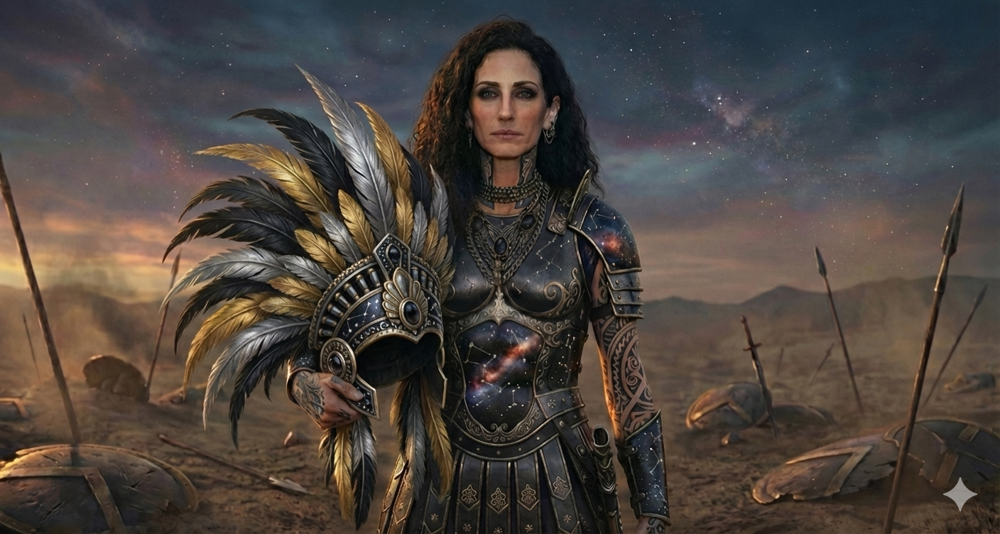

Matriarch of StellgazeAge 672Council Seat — AstravarThe Prophetic Line
She hears the room and something underneath it. The council has learned to wait when she opens her mouth — and learned what it means when she chooses not to.
Age
672
Council Seat
Astravar · Seat 4
Lineage
Stellgaze · Once Lornavek
Children
3 · Calistra · Dravik · Soryn
I.
Personality
The room and what is underneath it.
Maraveth is calculated and strange and far-seeing. Those three words are the ones the council has used about her for a hundred years, and none of them are wrong. None of them are quite enough either. What she actually is — what the seat across from her at the Blackstone table has come to understand — is that she listens to the room and to whatever is moving underneath the room at the same time, with equal attention. She does not always tell anyone which of the two she is responding to in any given moment. She has never been required to.
Her focus is distant by default. In the council chamber she will not look at the speaker. She will look somewhere just past them — at a corner, at the air a foot above their head, at nothing visible to anyone else — and the speaker will keep speaking and feel watched anyway. People who do not know her find this rude. People who do know her have learned what it costs them to misread it.
She is not warm. She is not cold either. She is the third thing that does not have a clean word in any of the languages of Gemlyria. The closest thing the kingdom has produced is the Stellgaze name itself — to look at the stars and write what you see and not flinch from any of it.
II.
The Far-Seeing
Foresight, restraint, and the cost of either.
The Stellgaze line reads the stars. It has done so since before the line was called Stellgaze — when it was Lornavek, on West Island, before mainland politics had a council to seat anyone at. The reading is not metaphor. It is craft, and it is inheritance, and Maraveth carries both at the highest concentration the line has produced in living memory.
It Is
A reading of pattern, weight, and turbulence — what is moving toward a moment, what stresses a structure carries, where the next break is most likely to occur. Not a prediction of specific events. Not a guarantee of any single outcome. Pattern recognition operating on a register most Apex never reach.
It Is Not
Vision. Prophecy in the storybook sense. Maraveth does not see "what will happen." She sees what is gathering toward happening — and what choices, made now, will route the gathering toward one outcome or another. The future is not fixed in her sight. The pressures are.
The Cost
She does not always say what she sees. Saying it changes the pattern. Choosing to speak or to remain silent is itself part of the work — and the work weighs on her in ways the council has not been allowed to see.
The Bound by Blood Vote
When Maia moved to compress the Blood Child timeline, Maraveth voted against. Her stated objection was clinical: turbulence at Lessio's first Apex peak. What she did not say in chamber was what she had read in the days before the session. She did not need to. The objection was enough. It did not carry the vote — but it is on the record.
Whether she has told Rhyzen what she has seen about Lessio's future, in private, is between them. He has chosen not to ask. This is a decision he renews every day they wake up beside each other.
III.
Reference Images
Formal · State Function
Midnight gown traced in constellations, the chained collar at her throat, sleeves of constellation ink running her arms. The matriarch standing alone in the room she has already finished reading.

Battle · The Cosmos Worn
Galaxy-printed cuirass, gold-and-silver feathered helmet held at her side, spear in hand. The night sky carried into the field. She does not hide on a battlefield. She walks into it wearing what she is.
With Calistra
The matriarch and her eldest daughter — two generations of constellation ink, two birth charts written into skin. The line passing forward by visible measure.
IV.
Relations
Rhyzen Locsird
Husband · Sardonic · Distant by Choice
Four hundred and thirty-one years her junior. The age gap is real and she has never softened it. The bond is deep and not conventionally romantic — she carries weight in the marriage that is hers and his alone, and he has never attempted to move it. He respects her foresight. He keeps personal distance from it. Whether she has told him anything about what she sees in his nephew's path is between them, and the council has not been allowed inside the answer.
Calistra Stellgaze
Eldest Daughter · The Line Forward
Eighty-seven years old, fully a Stellgaze in every register the line carries. Calistra wears her own birth-chart in her tattoos, her own version of the cosmic gown when the family appears in public. Whether she will inherit her mother's depth of foresight is something neither of them speaks about openly. That kind of inheritance is not yet decided. It is gathering.
Dravik Locsird
Son · Soldier · Quiet
Thirty-seven, quiet, efficient. Locsird-named by birth order, Stellgaze-raised in Astravar, his neck and hands carrying the partial constellation ink that marks him as belonging to the line by upbringing if not by name. Maraveth did not raise him to be a prophet. She raised him to be useful. He has been.
Soryn Stellgaze
Youngest Daughter · The Last in the Alternation
Thirty-five. The last child. The pattern of the names completes itself with her — Stellgaze, Locsird, Stellgaze. Maraveth is finished with childbearing and has been for some time. Soryn is the line's final word in this generation, and Maraveth carries her with the same exact composure she carries the others. Pattern is pattern.
King Jonzhento Locsird
Brother-in-Law · The Crown
She is married to his brother. She votes in his council. They have known each other for over two hundred years. He treats her with the careful, exact respect a king reserves for someone he does not entirely understand and does not pretend to. She has never asked him to understand her. She has occasionally let him know when she did not approve of one of his choices. He has occasionally listened.
Lessio Locsird
Husband's Nephew · The Vessel · The Pattern Underneath the Pattern
She voted against compressing his timeline. She named the reason — turbulence at his first Apex peak. She did not name the rest of what she has read about him, and she has not named it since. The Rebirth is the largest pattern moving through the kingdom in living memory. Maraveth has read enough of it to know which questions she is not yet allowed to answer aloud. She watches him without watching him. The seat across from her at the Blackstone table has noticed.
Maia Galmir
Council Peer · Speed Against Pattern
Maia moves first and asks the room to keep up. Maraveth waits, reads, and speaks once. The two Matriarchs are not enemies — the council does not work on enemies — but they pull in opposite directions on almost every motion involving the Rebirth. Maia advocates speed. Maraveth flags pressure. The compromises that result are usually neither woman's preferred outcome, and both of them appear, in their own measure, to consider this acceptable.
Melyra Galmir
Council Guest · The Other Far Reader
Melyra does not read the stars. She reads the bloodline. Both women operate on the largest available timescale and neither of them is fooled by the small-instrument politics of the rest of the council. They have not allied. They have not opposed. They have, on more than one occasion, looked at each other across a chamber and understood something the room did not.